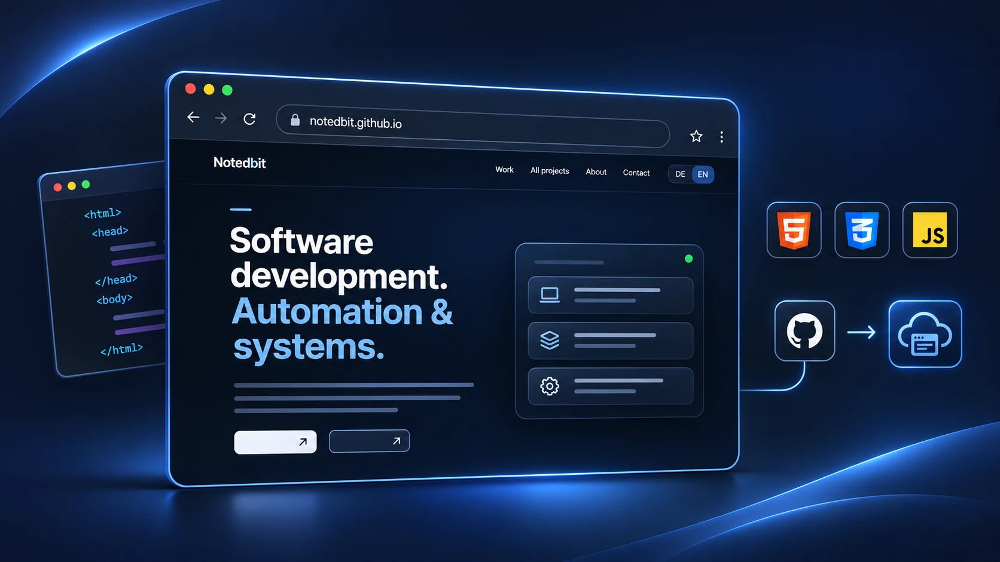
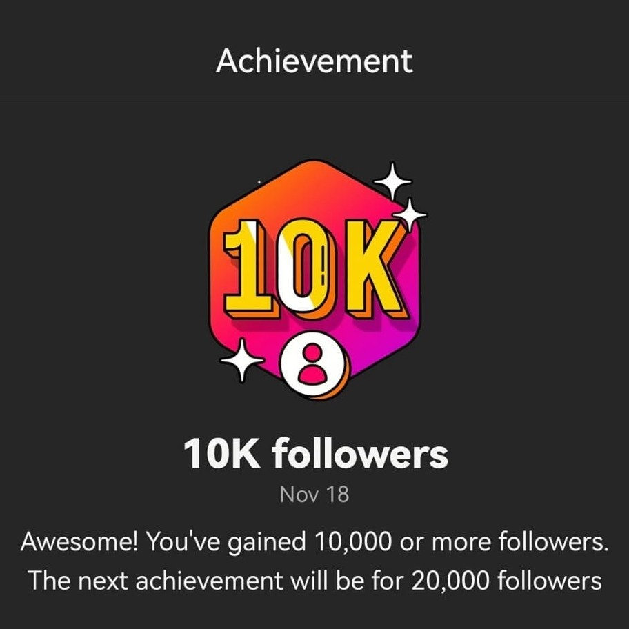
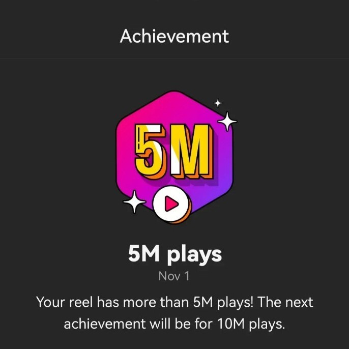

NOTEDBIT / PROJECT ARCHIVE
Projects & technical work.
Browse projects by category, then expand an entry to view its implementation, status and available evidence without leaving this page.
Select a category and expand a project.
Applications & software
Standalone applications and software coursework with stated development status.
2026Working Linux prototypeAutomated Video ProductionPython · Qwen · TTS · FFmpeg
Python application integrating local text generation, narration, composition and FFmpeg rendering. Public prototype output and separate test record.
From product information to video output
The application is designed to generate narrated vertical product videos from selected product data. Python coordinates data processing, local text generation, audio and rendering in an end-to-end workflow.
Pipeline components
The pipeline uses a local Qwen model for scripts, Kokoro for speech synthesis and FFmpeg for video rendering. Scene timing, captions, composition and technical checks are handled within the application. A PySide6-based desktop interface is part of the project.
An earlier output of the application, not a finalized product. The separately documented Linux end-to-end test used another video file.
2026Simulation core documentedPython Simulation & Video GenerationPython · pygame-ce · Events
pygame simulation with collisions, deterministic seeds and event-driven run evaluation. The full automated export workflow remains under development.
Simulation mechanics
The documented working state includes multiple moving balls, wall and ball collisions, escape/multiplication logic, deterministic seeds, unique object IDs and an internal simulation clock.
Events and reproducibility
An event/listener system records collisions, object creation, removal and scoring events. Debug overlays, run metrics and automated acceptance checks support testing and repeatable development runs.
2026Development archiveAutomated Horror Story & Video ProductionPython · Media pipeline
Separate Python project for story processing, voice and short-video composition. Public showcase video not yet verified.
Narrated fictional stories
The project targets English-language fictional horror videos. It combines narrative text, narration, image sequences, restrained visual movement, subtitles and media export. It is distinct from the product-video pipeline.
Batch processing and validation
Earlier development notes describe a desktop workflow with multiple independent story runs, subtitle handling and recovery from failed items in a batch. Automated tests were reported for the batch workflow, but an independently checked current media sample is not included here.
2022/23University group workC++ Game Development — Dungeon CrawlerC++ · OOP · JavaScript
Original C++ group project with object-oriented mechanics; later browser-playable JavaScript adaptation.
Original C++ project
Developed as part of Algorithms and Data Structures at the University of Osnabrück. The original environment used AlgoViz / SVG for graphics and included characters, enemies, combat, items, chests, gold, poison effects and level progression.
Game and level logic
The original code includes object-oriented classes and grid-based dungeon logic. Randomized level generation and checks for reachable areas are part of the documented implementation. The browser port reproduces selected mechanics using JavaScript and the existing pixel-art assets.

The browser game is a later JavaScript adaptation, not the original C++ coursework submission.
For a larger view, open the full game. Open full game ↗
2024Archived coursework, incompleteC++ Library ManagementC++17 · STL · File I/O
Archived multi-class application skeleton. The original command dispatcher was empty; attribution needs review before public code release.
Multiple domain classes
The archived code contains separate Book, Author, User, Tag, BorrowEntry and Library classes, with header/source separation, standard containers, lookup routines and file-I/O methods.
Missing command dispatch
The main input loop calls Library::processCommand(), but that method has no implementation in the available archive. A borrowing authorization check is also a placeholder. A successful build therefore does not mean the application is usable.
Web & infrastructure
Deployment, Linux maintenance, scripting and server operation.
2026Live siteWeb Development & DeploymentHTML · CSS · JS · Git
Responsive bilingual static website, GitHub Pages deployment and browser game integration.
Plain HTML, CSS and JavaScript
Notedbit is built without a frontend framework or backend. The site includes responsive navigation, a bilingual interface, project pages, a media player and an interactive JavaScript game adaptation.
Versioned and published
The source is managed with Git and GitHub and served through GitHub Pages under a custom domain. The public repository documents the site structure and the available source code.

Screenshot of this portfolio; source code is available in the public repository. GitHub ↗
2026Practical configurationLinux & System AutomationLinux · Shell · systemd
Linux migration, troubleshooting, shell/systemd tasks and documented maintenance workflows.
Shell and systemd
Linux maintenance tasks include scripted APT/Flatpak updates and systemd-based scheduling. The work demonstrates configuration and operation of local automation, not production-scale infrastructure administration.
Troubleshooting and system migration
Documented work includes boot and storage migration, desktop and hardware configuration, audio/network diagnostics and investigation of fluctuating Wi-Fi/download performance. A disk-to-NVMe migration was completed and the system booted successfully.
—Archived operationPrivate Game Server OperationLinux · Server operations
Dauntless Revived server operations on Linux. Server operation, not development of the original game.
Private Dauntless server
A private Dauntless Revived server was configured and operated under Linux, with maintenance and backups. The service has since been discontinued; this is operational experience, not a claim of developing the game or a commercial hosted platform.
Documentation scope
These are separate technical tasks grouped as a case study, not one unified software product. No live administrative dashboard, production monitoring setup or public server endpoint is claimed.
Media & publishing
Independent content work, not presented as software engineering.
2020–25On holdSocial Media Content ProjectInstagram · Video editing
MemeSmoke: independent short-form media publishing, creative editing and audience-performance analysis.
Editing, publishing and analysis
The account involved preparing and publishing short-form media content and reviewing performance using Instagram Insights. It is presented as a digital media project, not a programming project.
Recorded reach
The account reached more than 10,000 followers at its peak, published over 90 Reels and recorded individual posts with up to 8.1 million views. These are historical project results, not current reach figures.


Historical screenshots, not current audience figures.
Earlier coursework
Smaller assignments grouped without inflating them into products.
2023/24Group courseworkC++ Text CalculatorC++ · Parsing
Early group exercise: German number words, arithmetic parsing and exception handling.
Text-based calculator (group work)
A console program interprets written number words and arithmetic operators, validates inputs, handles errors and outputs results. The archived source names three student contributors; it is not represented as my individual work.
2023/24Group courseworkSorting Exercise (Bubble Sort)C++ · Algorithms
Small three-value sorting assignment; documented as coursework rather than a separate app.
Sorting and introductory exercises
The archive contains a small Bubble Sort task for three input values (also documented as group coursework), basic currency conversion with fixed rates, a conditional letter generator and introductory console programs. A similarly named sorter in the archive is not attributed to me without evidence.
2023/24Introductory courseworkIntroductory C++ ProgramsC++ · Control flow
Currency conversion, letter generation and introductory console exercises.
Sorting and introductory exercises
The archive contains a small Bubble Sort task for three input values (also documented as group coursework), basic currency conversion with fixed rates, a conditional letter generator and introductory console programs. A similarly named sorter in the archive is not attributed to me without evidence.
2022–25CourseworkComputer Architecture & Digital LogicRISC-V · Digital
RISC-V assembly and digital-circuit exercises from university modules; scope of individual submissions remains under review.
Digital logic and RISC-V
University materials and earlier discussions reference Digital circuit exercises and RISC-V/Assembly work. Simulator files alone are not evidence of a completed independent software project. The scope and authorship of specific submissions require review before publication.
Unrealized concepts and future hardware ideas are kept in the internal project inventory, separate from this public portfolio.
Return home